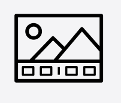

Work Experience
Desktop Support Associate Technician
- Handle inbound calls and chats from athome agents and document using Asknow-Servicenow.
- Monitor emails for updates.
- Basic troubleshooting for windows machines and converting usb/ssd drives to bootable systems.
- Profile checks on Active Directory and checking for correct policy groups.
- Basic troubleshooting on virtual desktops such as VMware and Citrix.
- Support through LMI (LogMeIn), Zoom or Screenmeet.
Senior Desktop Support Technician
- Supervise TCI and ORT classes to make sure they hit the required AHT and ample support to any who will have an issue with their on-boarding check.
- L2 POC role to monitor the team in the absence of a team lead. Monitoring the queue and handling chat transfers as well as adherence to their scheduled breaks.
- Continuation of associate tech support responsibilities mainly monitoring emails and providing L2 support to T1 Analysts instead.
- Deep Dive troubleshooting and coordination with other departments.
- Providing Support to multiple T1’s while probing different issues.
- Assisting in Outage bridges consisting of different department representatives to collate details to resolve an issue.
- Creating Job aids from troubleshooting steps performed in said bridges.
- Experience in supporting different platforms (SRW, SCCM, Azure 3.0) across multiple lines of businesses.
- Handling agents' technical issues, either hardware or software remotely and documenting using servicenow ticketing system.
- Troubleshooting windows machines and converting USB/SSD to bootable systems.
- Remote Isolation of issues with users' peripherals such us mouse, keyboard, monitors, headset, system units.
- Have experience in supporting users with software concerns such us updating or clean reinstallation using VBS scripts available.
- Checking user memberships or security groups using Cayosoft to make sure they have access to the tools for a certain Line of business.
- Determining user's outlook email and office access to either web or local app. If local app, if either they will use standalone or a licensed updated O365.
- Knowledge of setting up MFA for users such us PingID mobile and desktop.
- Familiarity with VMware, Citrix, Nice, Avaya, Cisco Jabber, Cisco IP Communicator applications.
- Supporting agents using VPNs such Global Protect and CAC and installing certificates available to them.
- Experience in network troubleshooting such as verifying network status, making sure nic card is reachable, ping test, ipconfig and flush.
Skills
Hardware Troubleshooting
Proficient in MS applications
Word, PowerPoint, Excel, Outlook, etc.
Virtual Desktop Application Troubleshooting
VMware, Citrix, AVD

Editing
Adobe Photoshop and Premiere

Programming
HTML, CSS, Bootstrap, C++